科技日报 | 2026-10-21
2026 年 10 月 21 日 周二 · GitHub Trending + Hacker News
今日关键词：DeepSeek 推理、证书信任危机、TypeScript 的 Rust 分身、OpenBSD 8.0、Agent 工具链。
今天最热的不是某一家大模型发布，而是基础设施层的连锁反应：DeepSeek 开源了高性能推理框架 DeepInfer；一家印度 CA 的中间证书私钥泄露，再次敲响 Web PKI 的警钟；Cloudflare 则把 TypeScript 编译器用 Rust 重写了一遍，目标是 8 倍速、70% 内存下降。
一、GitHub Trending 今日热门 TOP 10
数据截至 2026-10-21 上午，按"今日新增 Star"排序。
1. MadsLorentzen/ai-job-search —— 求职 Agent 继续霸榜
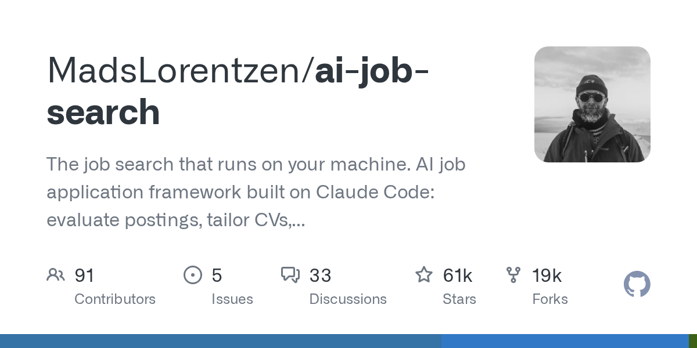
🏷️ 基本信息
- 语言：Python
- 总 Star：60,569
- 今日新增：+3,861（连续两日第一）
- 地址：https://github.com/MadsLorentzen/ai-job-search
📖 项目介绍
一个跑在本地的求职框架，基于 Claude Code 把求职拆成评估职位、定制简历、写求职信、准备面试四个环节。
✨ 技术亮点
- 全流程本地运行，简历和求职记录不经过第三方 SaaS；
- 把"高重复 + 强个性化"任务拆成可检查、可修改的流水线；
- 用 Claude Code 的技能机制组织任务，结构清晰。
🎯 适合场景
正在找工作、需要批量处理职位但不想牺牲定制化的人；也适合作为垂直领域 Agent 的参考实现。
📚 学习价值
连续两天冲顶说明：大家对"把 Agent 放进真实生活流程"的兴趣，已经超过单纯的新模型发布。看它在哪里保留人工确认，比看它用了什么提示词更有价值。
2. anomalyco/opencode —— 开源编码 Agent 仍在浪尖
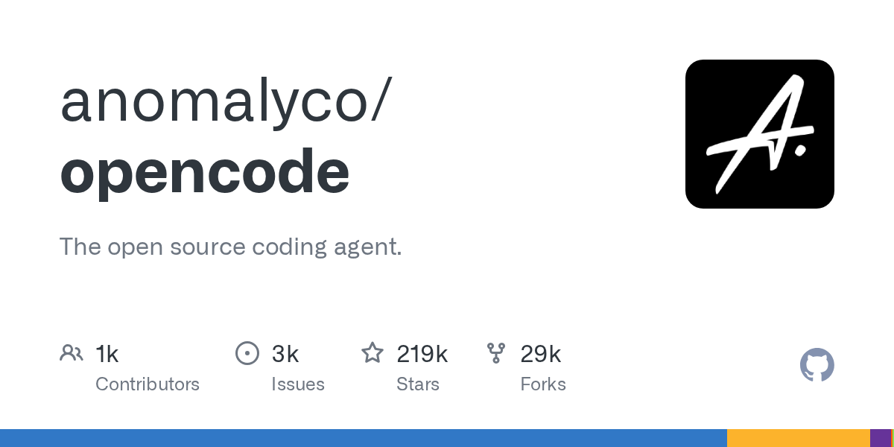
🏷️ 基本信息
- 语言：TypeScript
- 总 Star：218,918
- 今日新增：+1,240
- 地址：https://github.com/anomalyco/opencode
📖 项目介绍
开源编码 Agent，支持多种模型供应商和终端内直接交互。
✨ 技术亮点
- 终端原生体验，插件、记忆、编排等外围工具快速聚集；
- 开源可自托管，社区生态活跃；
- 正在形成自己的"skill"市场。
🎯 适合场景
希望把编码 Agent 接进自己工作流、且愿意自行审查安全的团队。
📚 学习价值
热度高不等于信任高。前几天刚发生用户密钥泄露事件，它提醒所有开发者：采用速度和信任建设可以完全脱节。
3. DietrichGebert/ponytail —— 让 AI 像"最懒的高级工程师"一样写代码
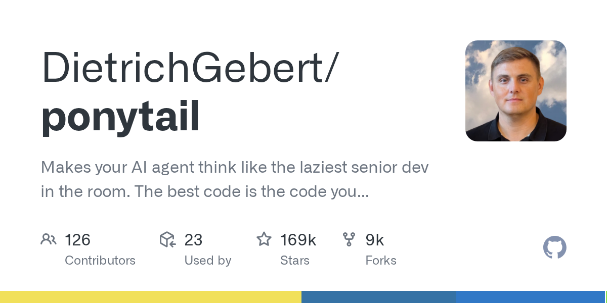
🏷️ 基本信息
- 语言：JavaScript
- 总 Star：169,649
- 今日新增：+1,208
- 地址：https://github.com/DietrichGebert/ponytail
📖 项目介绍
一个让 AI Agent "像最懒的高级工程师一样思考"的框架：不炫技、不堆砌，优先不写不必要的代码。
✨ 技术亮点
- 通过 Prompt 和工具约束引导 Agent 做最小改动；
- 强调"最好的代码是你没写的代码"；
- 适合已经厌恶"过度工程"的团队。
🎯 适合场景
代码库膨胀、Agent 改动频频引入新依赖的项目。
📚 学习价值
Agent 生成代码的一个隐藏风险是"积极贡献"：它为了显得有用，会不断加东西。Ponytail 试图反向约束——少即是多。
4. Comfy-Org/ComfyUI —— 节点式扩散模型工作台
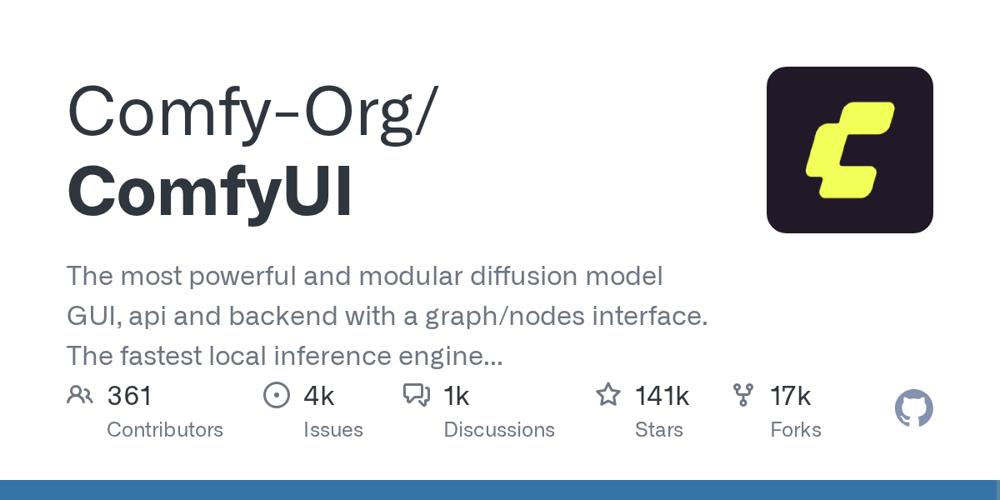
🏷️ 基本信息
- 语言：Python
- 总 Star：140,760
- 今日新增：+1,206
- 地址：https://github.com/Comfy-Org/ComfyUI
📖 项目介绍
最强大的模块化扩散模型 GUI / API / 后端之一：用图和节点组织生成流程，图片、视频、音频都能接。
✨ 技术亮点
- 节点式编排，复杂流程可视化；
- 前后端分离，可作为 API 后端使用；
- 社区节点生态庞大，新模型接入快。
🎯 适合场景
需要精细控制生成流程的创作者、搭建生成式 AI 服务的团队。
📚 学习价值
它是"工作流即程序"的典型样本：当模型能力被封装成节点，创意工作就变成了连线和调参。这也是一种新的编程范式。
5. Graphify-Labs/graphify —— 把整个代码库变成知识图谱
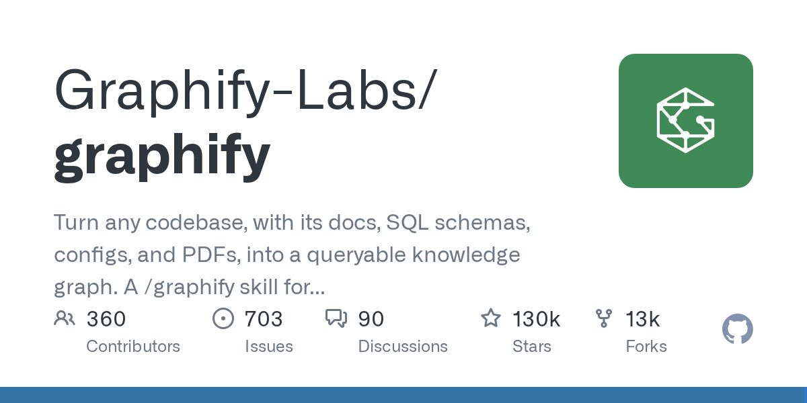
🏷️ 基本信息
- 语言：Python
- 总 Star：130,236
- 今日新增：+802
- 地址：https://github.com/Graphify-Labs/graphify
📖 项目介绍
把任意代码库、文档、SQL schema、配置文件、PDF 转成可查询的知识图谱，并作为 /graphify skill 接入 Claude Code、Cursor、Codex、Gemini CLI。
✨ 技术亮点
- 不是简单 RAG，而是结构化的跨源关系抽取；
- 支持代码、文档、数据库 schema 的统一建模；
- 以 skill 形式嵌入现有编码 Agent。
🎯 适合场景
大型遗留系统、跨多个仓库和文档的复杂项目。
📚 学习价值
Agent 要改好代码，先得"看懂"代码。Graphify 的赌注是：结构化的关系图比扁平的向量检索更接近人类工程师的理解方式。
6. ruvnet/ruflo —— Agent 编排与多智能体群
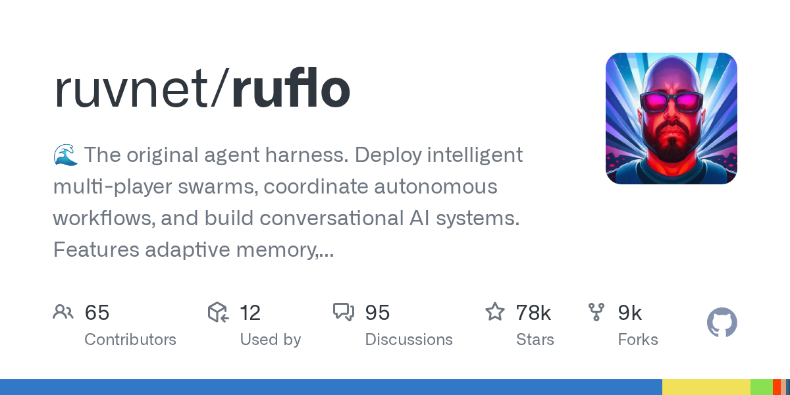
🏷️ 基本信息
- 语言：TypeScript
- 总 Star：77,841
- 今日新增：+684
- 地址：https://github.com/ruvnet/ruflo
📖 项目介绍
自称 "original agent harness"，支持部署多智能体 swarm、协调自主工作流、构建对话式 AI 系统。
✨ 技术亮点
- 自适应记忆、自学习、联邦、向量 RAG 集成；
- 原生支持 Claude Code / Codex / Hermes 等多种 Agent；
- 面向"多玩家"协作场景设计。
🎯 适合场景
需要多个 Agent 并行探索、互相协调的实验项目。
📚 学习价值
多 Agent 的难点不是"开几个"，而是任务怎么分、结果怎么合、冲突怎么解。
7. msitarzewski/agency-agents —— 一个"完整 AI agency"的 Shell 脚本集合
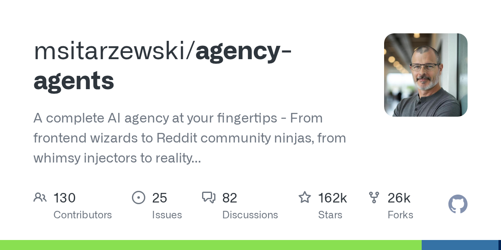
🏷️ 基本信息
- 语言：Shell
- 总 Star：162,348
- 今日新增：+562
- 地址：https://github.com/msitarzewski/agency-agents
📖 项目介绍
一组角色化的 Agent 脚本，从前端巫师、Reddit 社区运营到现实检查员，试图用一个仓库拼出一个"AI 代理公司"。
✨ 技术亮点
- 用 Shell 脚本降低启动门槛；
- 角色分工明确，可直接复制修改；
- 强调"agency"而非"chatbot"。
🎯 适合场景
想快速实验多角色 Agent 工作流、而不是从零搭建框架的人。
📚 学习价值
Shell 脚本做 Agent 编排，上限明显，但门槛低、可读性高、容易魔改。对于原型阶段，这种"不优雅但能用"的选择往往是对的。
8. headroomlabs-ai/headroom —— 给上下文"瘦身"
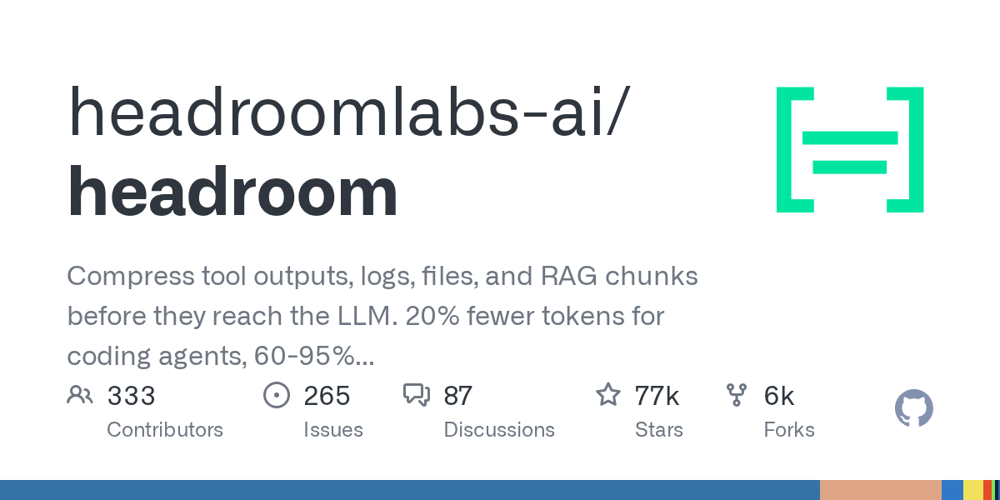
🏷️ 基本信息
- 语言：Python
- 总 Star：76,755
- 今日新增：+549
- 地址：https://github.com/headroomlabs-ai/headroom
📖 项目介绍
在工具输出、日志、文件和 RAG 分块进入 LLM 之前先做压缩，官方称可减少约 20% 的 token。
✨ 技术亮点
- 在"喂给模型之前"做压缩，而不是事后截断；
- 覆盖工具输出、日志、文件、RAG 多个来源；
- 直接打到 Agent 最贵的成本项。
🎯 适合场景
工具调用密集的 Agent、长日志分析、RAG 成本敏感的应用。
📚 学习价值
Agent 的成本大头往往不是推理，而是反复搬运的上下文。压缩层的价值，会随着 Agent 变复杂而上升。
9. stablyai/orca —— 管理一支 Agent 舰队
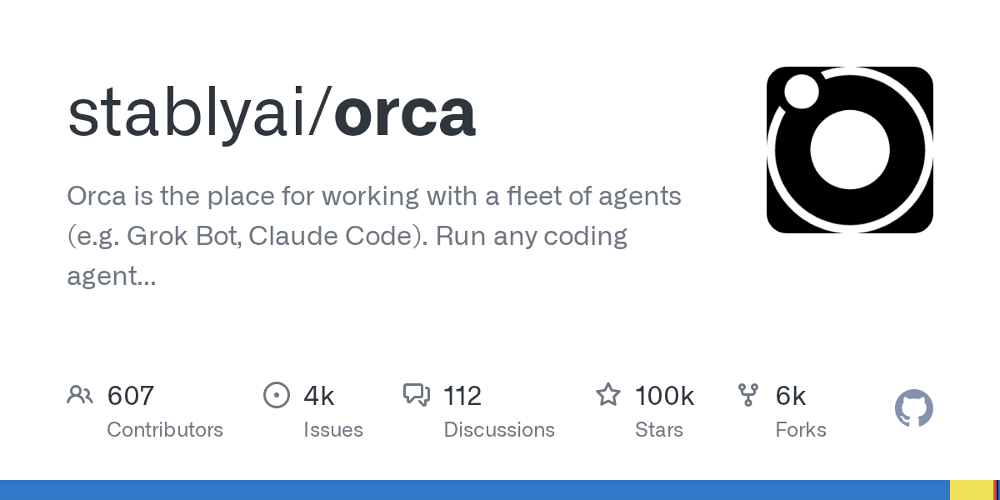
🏷️ 基本信息
- 语言：TypeScript
- 总 Star：99,733
- 今日新增：+1,565
- 地址：https://github.com/stablyai/orca
📖 项目介绍
多 Agent 工作台：可以用自己的订阅运行任意编码 Agent（如 Grok Bot、Claude Code），统一管理一组并行工作的智能体。
✨ 技术亮点
- 多 Agent 并行，而不是一次只开一个会话；
- 支持自带订阅，不必绑定某一家 API；
- 把"派活、观察、收结果"做成统一界面。
🎯 适合场景
同时推进多个任务的重度用户、需要并行探索方案的小团队。
📚 学习价值
Orca 和 ruflo 都在解决同一个问题：当 Agent 从"一个助手"变成"一组 worker"，你需要的是一个调度台，而不是更大的聊天窗口。
10. cloudflare/security-audit-skill —— 让 Agent 做安全审计
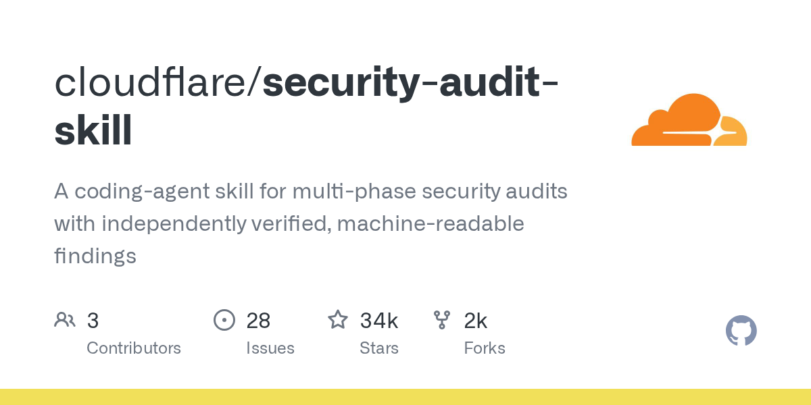
🏷️ 基本信息
- 语言：JavaScript
- 总 Star：34,208
- 今日新增：+1,712
- 地址：https://github.com/cloudflare/security-audit-skill
📖 项目介绍
Cloudflare 开源的一个 coding-agent skill，用于多阶段安全审计，输出独立可验证、机器可读的安全发现。
✨ 技术亮点
- 多阶段审计流程，强调"独立验证"；
- 输出结构化发现，而不是泛泛的文本建议；
- 直接面向生产代码库设计。
🎯 适合场景
需要在 CI/CD 或本地引入自动化安全审查的团队。
📚 学习价值
安全审计是 Agent 的高风险场景：漏报会留下隐患，误报会浪费人力。这个项目的价值在于把审计过程结构化，而不是把安全责任完全交给黑盒模型。
二、Hacker News 今日热榜 TOP 10
统计窗口：北京时间 2026-10-21 00:00 至发稿时，按 points 排序并去重。
| # | 标题 | 热度 | 讨论 |
|---|---|---|---|
| 1 | DeepInfer: High-performance inference framework for DeepSeek models | 2110 | 824 |
| 2 | EMudhra Intermediate CA Compromise | 600 | 322 |
| 3 | SimCity, but with Permits | 511 | 273 |
| 4 | Voxtral 3 | 506 | 138 |
| 5 | Apple broke an essential presentation feature of iPads | 479 | 246 |
| 6 | OpenBSD 8.0 | 466 | 154 |
| 7 | Facebook Pages require paid subscription to post more than two links per month | 409 | 374 |
| 8 | MicroG: Free-libre re-implementation of Google's proprietary Android user space | 380 | 100 |
| 9 | AfD Leak: What 421,179 Hacked Emails Show about the German Far Right | 368 | 529 |
| 10 | Tsrs: A Port of TypeScript to Rust | 338 | 159 |
1️⃣ DeepSeek 开源 DeepInfer：想把推理框架也握在手里
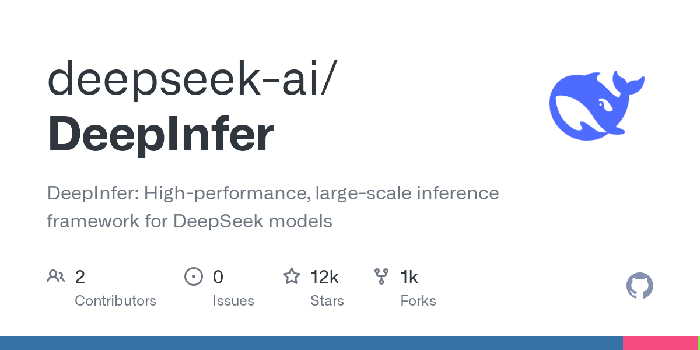
DeepSeek 今天开源了 DeepInfer，一个面向 DeepSeek 模型的高性能推理框架。它支持 DeepSeek-V4.1-Flash 在 NVIDIA 和华为硬件上运行，核心特性包括：
- 优化 kernel、并行策略、异步调度；
- batch-invariant 推理、结构化输出、确定性采样；
- 置信度调度的验证机制。
以 2110 points、824 条评论冲上 HN 榜首，说明开发者的关注点正在从"模型权重"向"推理基础设施"迁移。一个模型的价值不只取决于它有多聪明，还取决于能不能便宜、稳定、可预期地跑起来。
2️⃣ eMudhra 中间 CA 私钥泄露：Web 信任链又挨了一刀
eMudhra 是印度一家电子认证和 CA 服务商。今天被披露：其 8 个中间 CA 的私钥已被泄露。攻击者理论上可以用这些私钥签发任何网站的"合法"证书。
好消息是主流浏览器已经通过信任商店更新和 Certificate Transparency 机制快速拦截；坏消息是那些不严格校验 CT、不消费吊销数据的客户端仍然暴露在风险中。
这件事再次说明：PKI 的安全不只取决于根 CA，整条链上任何一环私钥泄露都是全局风险。所有依赖 HTTPS 的系统，都要确保能及时处理 CRL/OCSP 和根证书更新。
3️⃣ SimCity, but with Permits：城市规划不是上帝模式
这是一个城市建造游戏，但核心机制不是"放建筑"，而是"跑听证会、打官司、参加下一次选举"。你要平衡开发商、居民、法院和选民，才能继续当市长。
它的讽刺意味很直接：真实城市里，造一栋楼的阻力从来不在工程，而在人和制度。把它做成游戏，反而让城市规划外行也能理解"为什么好项目也会搁浅"。
4️⃣ Voxtral 3：Mistral 继续押注语音
Voxtral 3 是 Mistral 的语音模型系列更新，支持语音问答、文本-语音联合提示等能力。Mistral 在语音这条线上很坚持：从早期的 Voxtral Small/Mini，到后来的 Voxtral TTS，再到现在的 Voxtral 3。
看点不在于它是不是"最强"，而在于开源语音模型正在形成一条独立产品线，与 OpenAI、Google 的闭源语音 API 正面对峙。对需要私有化部署、低延迟语音交互的场景，这是好消息。
5️⃣ iPadOS 27 的 AirPlay 演讲视图被苹果改坏了
作者 Teddy Svoronos 抱怨：iPadOS 27 里，AirPlay 的演讲者视图被改了——切到其他 App 时，外接显示器会突然显示完整 iPad 屏幕，而不是保持演讲内容。这意味着演讲者的私人笔记、投票结果会被当众投出来。
对教师、经常做演示的人来说，这是"毁灭性倒退"。目前没有修复，作者建议需要演示的人暂时别升级。
这类 bug 看起来小，但对依赖 iPad 做生产力的用户来说，一个核心场景的破坏足以抵消所有新功能。
6️⃣ OpenBSD 8.0 发布：桌面可用性大幅推进
OpenBSD 8.0 正式发布，这次在"保守"形象之外做了不少激进更新：
- DRM 图形栈跟进到 Linux 6.18.y，新增 Intel Arc A 系列支持；
- vmm/vmd 支持最多 64 vCPU 的 SMP 虚拟机；
- amd64 内核虚拟地址空间提升到 512G，可映射超过 4G 显存；
- LibreSSL 4.4.0、OpenSSH 10.6，集成后量子密码方案；
- 编译器切换到 Clang/LLVM 22，sparc64 也完成切换。
为什么值得关注：OpenBSD 正在认真对待桌面和虚拟化，而不只是服务器和防火墙。对想要一个"安全且能用"的 Unix 桌面的人来说，这是重要的一步。
7️⃣ Facebook Pages 发链接也要订阅费了
据多位开发者反馈，Facebook Pages 现在对非付费用户每月只能发两条带外部链接的帖子，超过要订阅。
这件事在 HN 引发 374 条评论，核心争议是：平台正在把" reach 自己受众"这种基本能力变成付费功能。对依赖 Facebook 做社区和发布的独立开发者、小团队来说，这是又一次平台风险提醒。
8️⃣ MicroG：继续替代 Google 专有服务
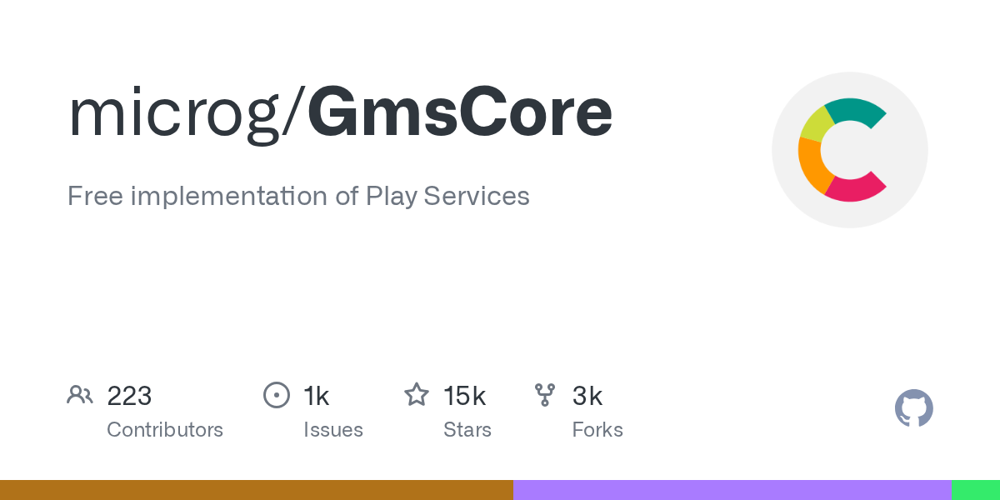
MicroG 是一个自由开源的 Google 移动服务（GMS）重新实现，让那些不想用 Google 专有框架的 Android 设备也能跑依赖 GMS 的应用。
它存在了多年，但热度一直没退，因为"去 Google 化"的 Android 生态需求真实存在：从隐私极客到某些国家/地区的设备厂商，都需要一条不依赖 Google 服务栈的路。
9️⃣ AfD 泄露 42 万份邮件：政治泄漏与数字卫生
德国极右翼政党 AfD 被曝有约 42 万份内部邮件泄露。HN 上相关讨论的域名一度被 Cloudflare 标记为疑似钓鱼。
对普通读者来说，这条新闻的真正教训不是政治，而是数字卫生：
- 不要直接点开来路不明的"泄漏文件包"；
- 不要在未隔离环境输入任何凭据；
- 等可信媒体核实后再传播。
信息越劲爆，越要先停三秒。
🔟 Tsrs：Cloudflare 把 TypeScript 编译器用 Rust 重写

Cloudflare 和 VoidZero 合作，用 Rust 重写了 TypeScript 编译器，项目叫 tsrs。目标很激进：
- 比标准 TypeScript 快 8 倍；
- 内存使用降低 70%；
- 支持无 GC 的 WebAssembly 编译，可直接在浏览器、IoT、Cloudflare Workers 里跑；
- 与官方 TypeScript 团队紧密合作，保持严格兼容。
为什么选 Rust 而不是 Go？因为 Rust 的内存模型适合编译到 WASM，不需要打包垃圾回收器。部分优化已经反哺到 TypeScript 7.1 beta。
这条新闻的意义：TypeScript 工具链可能迎来一次"引擎更换"——不是语法变，是编译器变。对前端基础设施、CI/CD、边缘计算都有直接影响。
三、今日趋势观察
1. 推理基础设施正在成为开源主战场
DeepSeek 开源 DeepInfer，加上前几天 MiniMax、Mercury 的推理加速动作，说明 2026 年的竞争焦点正在上移：从"谁的模型更聪明"转向"谁的模型更容易便宜地跑起来"。对部署模型的人来说，这是比榜单分数更实在的消息。
2. 信任基础设施再次暴露单点风险
eMudhra 中间 CA 私钥泄露、AfD 邮件泄漏被疑似钓鱼站点传播，两件事都在提醒我们：Web 的信任链和信息链都很脆弱。证书、域名、邮件、下载链接——每一个环节都需要独立验证，而不是因为"看起来很劲爆"就点击。
3. Agent 工具链在"分工"和"压缩"两个方向同时演进
今天的 GitHub Trending 里，一边是 orca、ruflo、agency-agents 把 Agent 拆成多角色 swarm；另一边是 headroom 给上下文瘦身、Ponytail 约束 Agent 少写代码。两个方向并不矛盾：前者解决"谁来干"，后者解决"别乱干"。
4. 平台锁定的反弹在加剧
Facebook 对链接收费、Apple 的 AirPlay 演示回归、MicroG 持续受关注——三件事指向同一个情绪：用户和开发者对"平台说了算"越来越不耐烦。技术层面上，这意味着自托管、替代实现、本地优先会继续获得市场。
数据来源
- GitHub Trending：https://github.com/trending?since=daily（2026-10-21 上午抓取）
- Hacker News：hn.algolia.com，北京时间 2026-10-21 00:00 至发稿时，按 points 排序并去重
- 图片：GitHub OpenGraph 卡片 + 各站点 og:image
日报由自动化管线生成，数据以原始链接为准。